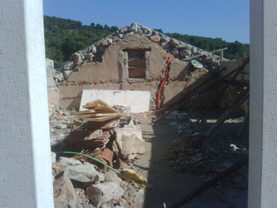
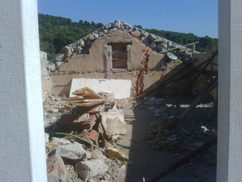

Hvar Holiday Rooms are run by Jana, an English yoga teacher, and Ante, a Croatian from Zagreb with old family ties to the Dalmatian coast. In 2007 they found a site of derelict traditional stone buildings in the small Hvar village of Dol.


There was lots of work to be done! The stone buildings that the islanders had built for their homes and olive oil or wine production had lasted for hundreds of years but there was little in the way of plumbing and electricity, let alone the work needed to clear the site to allow proper construction to begin.

Determination and trusting to their wits took the place of any kind of budget to start the renovation and the next few years saw their patch of Dol gradually grow. With the occasional help of friends, neighbours and visitors they worked hard for the next few years to organise construction and build essential facilities.
 

2010 saw the previously derelict site finally take shape. With the construction work completed the individual rooms could finally be furnished and decorated and welcome their first guests. The gardens could be planted and the terrace areas could be enjoyed in peace and quiet to bask in the sun.

Hidden away in the foothills of the central hilly peaks running the length of Hvar this old pretty village with its peaceful and original mediteranean feel, healthy food and drinks from local produce, making a lovely location for holidays and retreats.